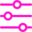
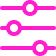
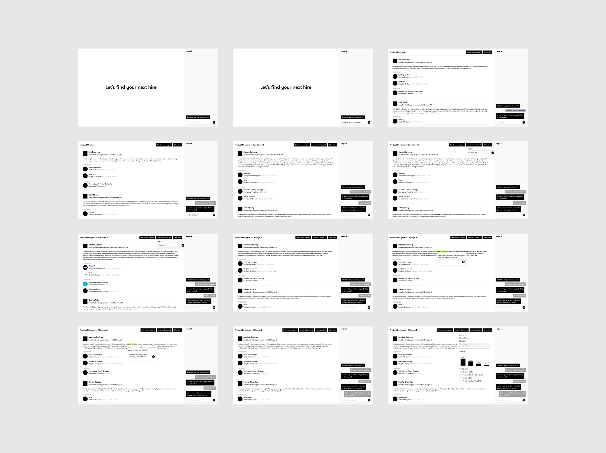
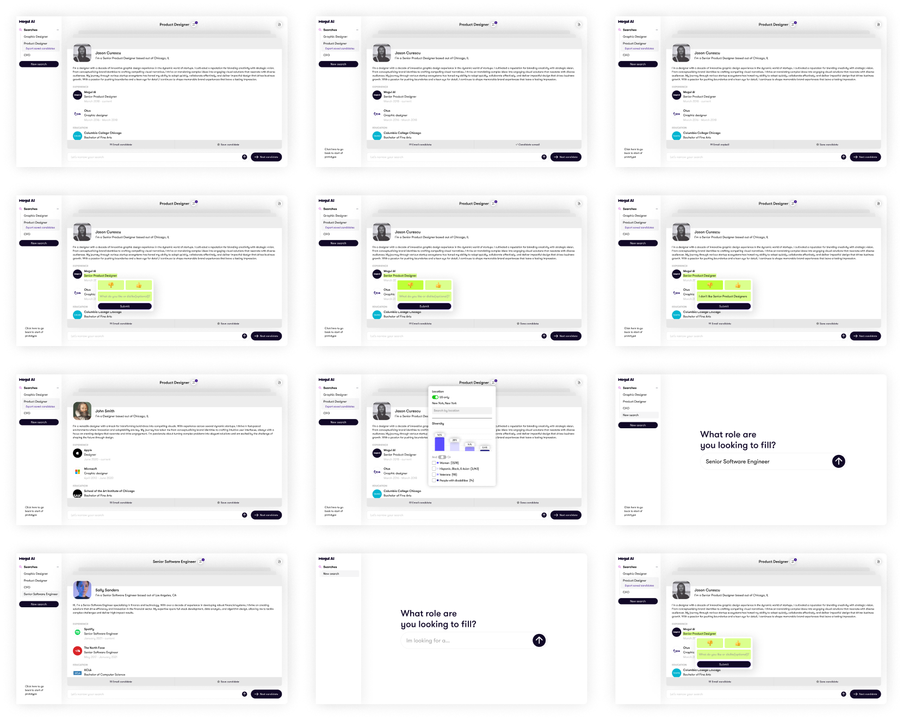
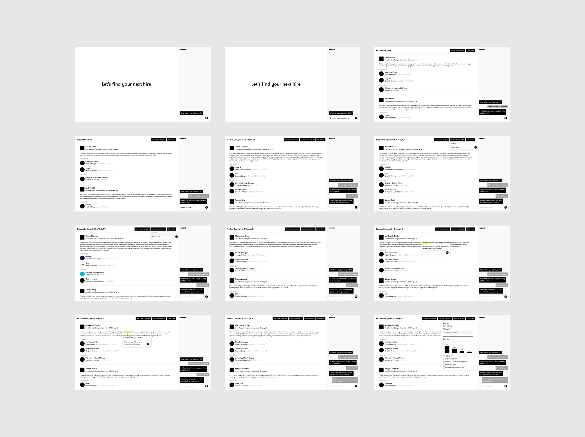
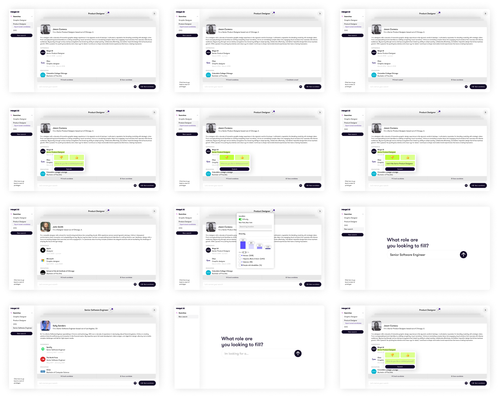

Product Strategy & Leadership
UI/UX Design & Product Development
User Research &
Validation
AI Integration & Recruitment Tools
Branding & Marketing
As new features were added, Mogul Recruiter became powerful but also messy. There were too many paths to do the same task, and no clear direction on what the “right” flow was. Recruiters were getting lost between jobs, sourcing, and outreach. The experience was fragmented and clunky, making it hard to move quickly or stay organized.
I joined Mogul as the first and only designer, stepping into a fast-paced environment where I had the chance
to shape the product from the ground up. At the time, Mogul was a global content platform for women curating
everything from articles and videos to courses and community discussions.
As the company evolved
into an AI-powered recruitment platform focused on inclusive hiring, my role evolved too. I worked across
nearly every design touchpoint from branding, product, web, and app design collaborating closely with the CEO,
CTO, engineering, and marketing teams. Whether it was building our first design system, creating the Mogul App
from scratch, or designing tools that helped companies search through 700M+ profiles, my goal was always to
create thoughtful, scalable solutions that moved the product and business forward.
We noticed a growing problem: companies were struggling to find and connect with candidates from
underrepresented backgrounds. Since Mogul already had a strong community of diverse professionals, we saw a
clear opportunity to build something that could make a difference.
That’s how Mogul Recruiter was
born. A sourcing tool powered by AI that helps companies surface talent across key diversity categories,
including gender, ethnicity, veteran status, and disability. I led the design from the ground up, working
directly with clients and our Customer Success team to understand real hiring workflows, pain points, and
goals.
Through research, iteration, and feedback, we turned Mogul Recruiter into a smarter, more
focused platform that supports inclusive hiring in a meaningful and measurable way.
It became clear that we needed to simplify. The navigation felt heavy, the layout was noisy, and key workflows
weren’t obvious. I made it my priority to untangle the user experience, starting with flow mapping,
breadboarding, and stakeholder interviews.
I spent time digging into how recruiters actually used
the tool, where they got stuck, where they expected features to live, and what slowed them down. After three
rounds of iteration, we landed on a new structure that felt more focused, more intuitive, and got great
feedback from our users.
The redesign centered on one big idea: clarity through structure. I reimagined the experience around a job-centric model housing everything (sourcing, candidate review, campaigns, and progress tracking) within each job. That shift helped eliminate the need to jump between sections and gave recruiters a single, focused space to get their work done.
To support day-to-day workflow, I also designed a new inbox system. A centralized view that keeps recruiters up to date with tasks, updates, and candidate activity.
Sourcing is the foundation of the hiring process. It’s the first step in identifying the right candidate for your role, helping you build a pool of talent that sets the stage for finding the perfect fit.
I elevated one of our most unique features: the Diversity Categories filter. It’s a core differentiator for Mogul, so I gave it more visibility in the UI to help teams prioritize inclusive hiring in a seamless, natural way.
Once you've sourced candidates, you can review and manage all the ones you've saved. Recruiters have the option to sort by "Best Fit," which ranks candidates from most to least suitable based on their experience. There's also a "Top Potential" sort, which highlights candidates most likely to succeed in the role. Additionally, you can email candidates directly or remove them before moving forward with the campaign.
Once all candidates are sourced, you can create custom email and text campaigns, with the flexibility to schedule them whenever it suits you. After each step, you'll receive analytics to track performance, helping you understand what worked and what could be improved on for the next round of emails or texts.
Back to the Drawing Board


 



 


